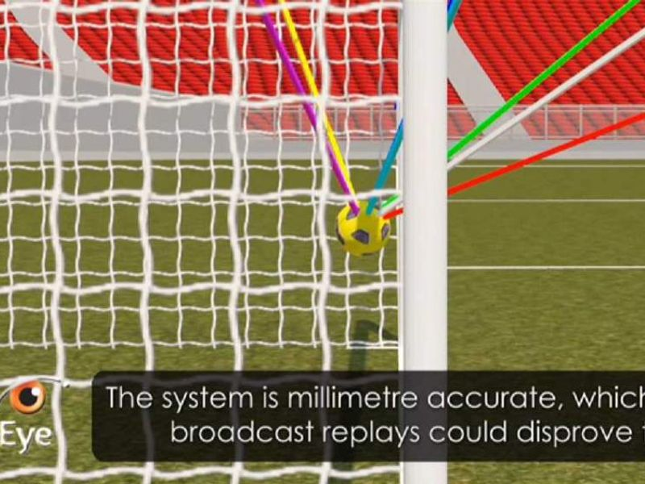

Hawk-Eye
Ball Tracking and Goal-Line Technology in Sport
1. Short overview
Hawk-Eye is a computer vision system that tracks a ball with several cameras and displays its statistically most likely path as a moving image. Developed in the United Kingdom by Paul Hawkins and now owned by Sony, it was first used in 2001 for cricket broadcasts. Up to ten cameras, usually fixed under the stadium roof, are triangulated to build a 3D trajectory with an advertised accuracy of 2.6 mm. It is used in more than 20 sports and serves as an impartial review tool in tennis, cricket and football. In football, it acts as goal-line technology, adopted by the Premier League in 2013–14, with seven cameras at each end and a result sent to the referee within a second.
2. Fuller summary
Definition and origin
Hawk-Eye is a computer vision system that visually tracks the trajectory of a ball and shows its statistically most likely path. It was created in the UK by Paul Hawkins and is now owned by Sony. Its first use was in 2001, in television broadcasts, to analyse leg before wicket decisions in cricket. (Wikipedia)
How it works
Up to ten high-performance cameras, normally placed on the underside of the stadium roof, follow the ball from different angles. Their video is triangulated and combined into a three-dimensional representation of the trajectory. The system is not infallible, but it is advertised as accurate to within 2.6 mm. (Wikipedia)
Adoption in sport
Hawk-Eye is used in more than 20 major sports, including baseball, cricket, tennis, badminton, hurling, rugby union, football, Gaelic football, American football and volleyball. Governing bodies in tennis, cricket and football accept it as a means of adjudication. It has powered the Challenge System in tennis since 2006 and the Decision Review System in cricket since 2009. (Wikipedia)
Case study: goal-line technology in football
The Premier League gave Hawk-Eye the contract for all matches from the 2013–14 season. Seven cameras are focused on each goal, usually on the stadium roof. The images are processed to find the ball and to ignore everything that is not the ball. When the whole ball crosses the line, the outcome reaches the referee within a second, through an encrypted watch developed with Adeunis and unaffected by interference. (Premier League)
Accuracy and limits. The system betters FIFA’s margin-of-error requirement of ±3 cm. It can locate the ball even when players hide most of it, because only a small percentage needs to be visible, and in extensive tests the ball was always visible enough. Fog, rain, snow and mud on the ball do not disrupt it: if visibility is good enough for the match to go ahead, it is good enough for the cameras. (Premier League)
Replay. A video replay is available for television within 10 seconds, filmed by a dedicated high-speed camera that removes the players from the image so the ball stays visible. (Premier League)

3. Short overview (Key words)
- Hawk-Eye: cameras track the ball, shows its most likely path
- Origin: UK, Paul Hawkins, Sony, first used in 2001 (cricket LBW)
- Up to 10 cameras → triangulation → 3D trajectory → 2.6 mm
- 20+ sports; tennis (2006), cricket (2009)
- Football: goal-line technology, Premier League 2013–14
- 7 cameras per end, signal within 1 second
4. Fuller summary (Key words)
Definition and origin
- Computer vision system → tracks ball trajectory
- Paul Hawkins (UK) → owned by Sony
- 2001 → TV broadcasts → cricket LBW
How it works
- Up to 10 cameras under the roof
- Triangulation → 3D representation
- Accuracy 2.6 mm (not infallible)
Adoption in sport
- 20+ sports (tennis, cricket, rugby, football, volleyball…)
- Tennis → Challenge System (2006)
- Cricket → Decision Review System (2009)
Case study: goal-line technology
- Premier League contract → 2013–14
- 7 cameras per goal → find ball, ignore the rest
- Whole ball over the line → alert to referee’s watch in 1 second
- Encrypted signal, no interference
- Accuracy: better than FIFA’s ±3 cm
- Occlusion: small visible part is enough
- Weather: fog, rain, snow, mud → no effect
- Replay for TV in 10 seconds, high-speed camera removes players